Dpto. Estadística e Investigación Operativa · Universidad de Granada
Objetivos de aprendizaje — Tema 6
Tip
Al finalizar este tema sabrás:
Interpretar un diagrama de dispersión y el coeficiente de correlación \(r\)
Estimar e interpretar los coeficientes de regresión \(\beta_0\) y \(\beta_1\)
Evaluar el ajuste del modelo con \(R^2\) y gráficos de residuos
Distinguir entre IC (media) e IP (individuo) para predicciones
Recordar que correlación no implica causalidad
Usar rls() y rlsm() de BioEstatR para regresión en una línea
Motivación: Imc y porcentaje de masa grasa
Muestra de 12 adolescentes (15–19 años)
IMC
% Graso
IMC
% Graso
20.36
17.36
21.72
25.62
20.34
12.72
19.29
20.91
20.05
11.65
23.07
17.81
23.94
19.34
27.45
29.70
22.17
24.19
24.37
15.26
22.18
28.41
17.30
8.87
¿Existe relación entre IMC y % de masa grasa?
De ser así, ¿es intensa? ¿Existe algún modelo que permita caracterizarla?
Sabiendo el IMC, ¿es posible hacer un pronóstico del % graso?
En tal caso, ¿es fiable tal pronóstico?
Correlación vs. regresión
Correlación
Cuantifica la fuerza de la asociación entre dos variables
Coeficiente de correlación (\(r\))
Simétrica: no distingue rol de variables
No implica causalidad
Solo mide asociación lineal
Regresión
Modela cómo cambia una variable (\(y\)) al cambiar otra (\(x\))
Ecuación: \(y = f(x)\)
Asimétrica: distingue variable explicativa (\(x\)) y explicada (\(y\))
Permite predecir valores de \(y\) a partir de \(x\)
Permite cuantificar el efecto de \(x\) sobre \(y\)
El diagrama de dispersión: Primer paso siempre
Importante
Antes de cualquier análisis numérico: visualizar la relación.
Mostrar código R
imc <-c(20.36,20.34,20.05,23.07,23.94,27.45,22.17,24.37,22.18,17.30,21.72,19.29)graso <-c(17.36,12.72,11.65,17.81,19.34,29.70,24.19,15.26,28.41,8.87,25.62,20.91)plot(imc, graso, pch=19, col="steelblue", cex=1.5,xlab="IMC (kg/m²)", ylab="% Masa Grasa",main="IMC vs. % Masa Grasa (n=12)")
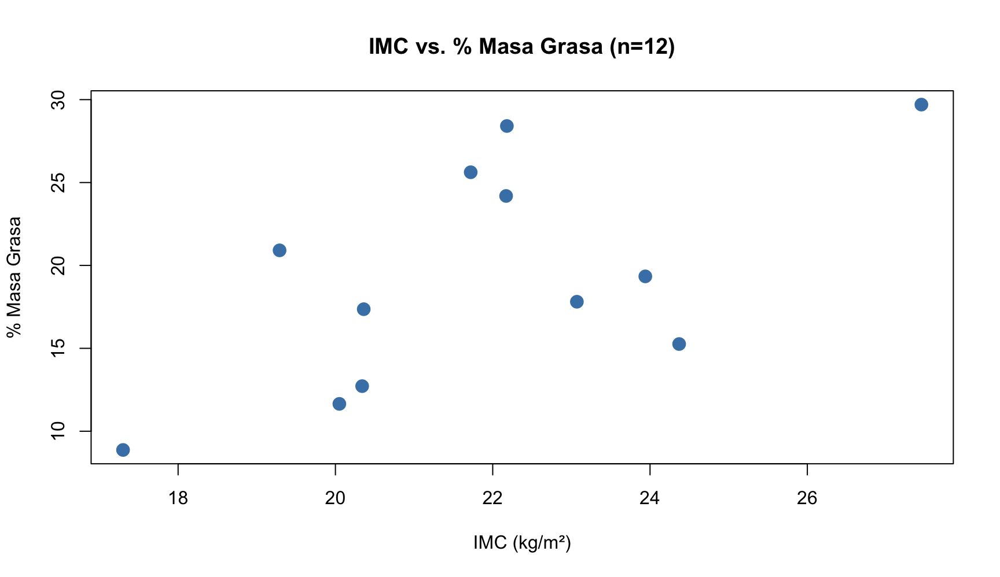
Qué observar en el diagrama de dispersión
¿Hay relación? → ¿Los puntos siguen algún patrón o es una nube informe?
¿Lineal o no lineal? → ¿Forma de recta o curva?
¿Directa o inversa? → Al aumentar \(x\), ¿aumenta (+) o disminuye (−) \(y\)?
¿Homocedasticidad? → ¿La dispersión de \(y\) es constante para todo \(x\)?
¿Valores atípicos? → ¿Hay puntos que se alejan del patrón general?
¿Observaciones influyentes? → ¿Algún punto modifica sustancialmente la recta?
Diagnóstico visual: Patrones típicos
Mostrar código R
par(mfrow=c(2,3), mar=c(4,4,3,1))set.seed(123); n <-50# 1. Relación lineal directax <-rnorm(n); y <-2*x +rnorm(n,0,0.5)plot(x,y,pch=19,col="steelblue",main="Lineal directa (+)",xlab="x",ylab="y")abline(lm(y~x),col="darkgreen",lwd=2)# 2. Relación lineal inversay2 <--2*x +rnorm(n,0,0.5)plot(x,y2,pch=19,col="seagreen",main="Lineal inversa (−)",xlab="x",ylab="y")abline(lm(y2~x),col="darkgreen",lwd=2)# 3. Relación no linealy3 <- x^2+rnorm(n,0,1)plot(x,y3,pch=19,col="seagreen",main="No lineal (curva)",xlab="x",ylab="y")# 4. Sin relacióny4 <-rnorm(n,0,1)plot(x,y4,pch=19,col="grey50",main="Sin relación",xlab="x",ylab="y")# 5. Heterocedasticidady5 <- x +rnorm(n,0,abs(x)*0.8)plot(x,y5,pch=19,col="purple",main="Heterocedasticidad",xlab="x",ylab="y")# 6. Valor atípicoy6 <-2*x +rnorm(n,0,0.5); y6[50] <- y6[50]+6plot(x,y6,pch=19,col=ifelse(1:n==50,"red","steelblue"),main="Con valor atípico",xlab="x",ylab="y")
Mostrar código R
par(mfrow=c(1,1))
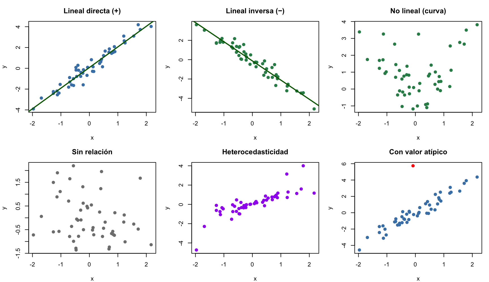
Roles de las variables y tipos de muestreo
Muestreo Tipo I (Observacional)
Muestra aleatoria → se observan ambas variables
Los roles \(x\) e \(y\) son intercambiables
Solo permite hablar de asociación (covariación), no de causalidad
Ejemplo: Medir IMC y % graso en una muestra aleatoria de adolescentes.
Muestreo Tipo II (Experimental)
Se fijan los valores de \(x\) → se observa \(y\)
Los roles no son intercambiables
Permite establecer relaciones causales
Ejemplo: Fijar dosis de fármaco (\(x\)) y medir respuesta (\(y\)).
Importante
Asociación no implica causalidad. Ejemplo clásico: estatura y destreza motriz en niños — ambas aumentan con la edad, pero no hay relación causal directa (asociación espuria).
¿Cómo Funciona la Regresión? — Intuición Visual
Mostrar código R
set.seed(123); n <-30x <-runif(n, 4, 14)y <-2+0.6*x +rnorm(n, 0, 2)modelo <-lm(y ~ x)par(mfrow=c(1,2), mar=c(4,4,3,1))# Panel 1: Solo puntos — difícil ver patrónplot(x, y, pch=19, col="grey60", cex=1.3, main="Paso 1: ¿Hay relación?",xlab="Sesiones de fisioterapia", ylab="Mejoría EVA")# Panel 2: Con recta de regresiónplot(x, y, pch=19, col="steelblue", cex=1.3, main="Paso 2: La recta resume la relación",xlab="Sesiones de fisioterapia", ylab="Mejoría EVA")abline(modelo, col="darkgreen", lwd=3)# Mostrar residuosfor(i in1:n) lines(c(x[i],x[i]), c(y[i], fitted(modelo)[i]), col="grey60", lty=3)
Mostrar código R
par(mfrow=c(1,1))
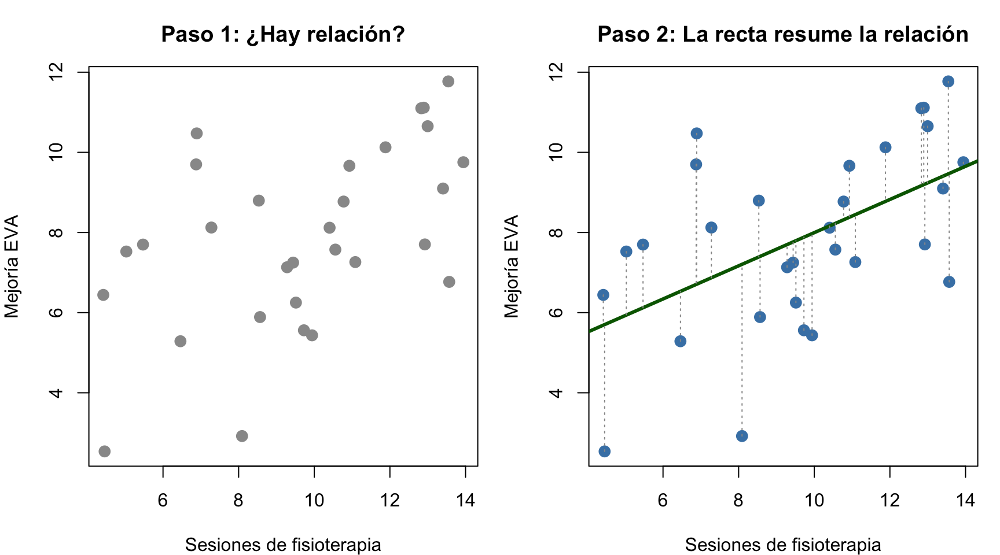
La regresión encuentra la recta que minimiza la suma de distancias verticales al cuadrado (residuos).
El Modelo de Regresión Lineal
Conexión T01→T06: En T01 describiste variables individuales. En T05 detectaste asociación entre variables categóricas (\(\chi^2\), OR, RR). En T06 modelas y cuantificas la relación entre variables continuas. La regresión une descripción (T1), probabilidad (T2), estimación (T3), contraste (T4) y asociación (T5) en un solo marco.
Comprueba tu comprensión — Covarianza
Tip
Pregunta rápida: Si dos variables clínicas tienen covarianza negativa, ¿qué significa? Da un ejemplo en fisioterapia donde esperarías encontrar covarianza negativa.
Covarianza — La base de la regresión
Definición: La covarianza mide cómo dos variables varían conjuntamente:
Relación con la pendiente:\(\hat{\beta}_1 = \frac{\Cov(X,Y)}{\Var(X)} = \frac{S_{xy}}{S_{xx}}\)
Nota
Intuición: La covarianza te dice si \(X\) e \(Y\) van en la misma dirección (positiva) o en direcciones opuestas (negativa). La pendiente \(\hat{\beta}_1\) va un paso más allá: te dice cuánto cambia \(Y\) por cada unidad de cambio en \(X\).
La covarianza indica la DIRECCIÓN de la relación; la pendiente cuantifica su MAGNITUD.
\(S_{xx}\), \(S_{xy}\), \(S_{yy}\) — Los Tres Pilares de la Regresión
Nota
Conexión T03→T06: En el Tema 3 usaste \(SS\) (suma de cuadrados) para la varianza: \(s^2 = \frac{SS}{n-1}\) donde \(SS = \sum(x_i-\bar{x})^2\). Aquí \(S_{xx}\) es exactamente esa misma cantidad — la suma de cuadrados de \(X\). \(S_{yy}\) es la suma de cuadrados de \(Y\). Y \(S_{xy}\) es la suma de productos cruzados, una generalización natural a dos variables.
Toda la regresión lineal se construye sobre tres cantidades fundamentales que miden la variabilidad de \(X\), de \(Y\), y su variación conjunta:
\(\mathbf{S_{xx}}\) = \(\sum (x_i - \bar{x})^2\) — Dispersión de \(X\) alrededor de su media
\(\mathbf{S_{yy}}\) = \(\sum (y_i - \bar{y})^2\) — Dispersión de \(Y\) alrededor de su media (= \(SC_{tot}\))
Intuición geométrica:\(S_{xx}\) es la suma de distancias horizontales al cuadrado. \(S_{yy}\) es la suma de distancias verticales al cuadrado. \(S_{xy}\) es el producto de ambas: positivo si \(x\) e \(y\) se mueven en la misma dirección, negativo si van en direcciones opuestas.
Memoriza estas tres letras:\(S_{xx}\), \(S_{xy}\), \(S_{yy}\). Absolutamente TODO en regresión lineal simple se construye a partir de ellas: la pendiente, la correlación, el \(R^2\), los errores estándar, los intervalos de confianza, los intervalos de predicción, y el test \(F\).
\(\beta_0\): intercepto — valor esperado de \(y\) cuando \(x=0\)
\(\beta_1\): pendiente — cambio en \(y\) por cada unidad de cambio en \(x\)
\(\varepsilon_i\): error aleatorio — lo no explicado por \(x\) (variabilidad residual)
Dos componentes: - Determinista:\(\beta_0 + \beta_1 x_i\) — la recta de regresión - Aleatorio:\(\varepsilon_i\) — variabilidad no explicada, \(N(0,\sigma^2)\)
Tip
Ejemplo rápido — 3 pacientes: Si tenemos \((x,y)\) = (4,2), (8,5), (12,7): - \(\bar{x}=8\), \(\bar{y}=4.67\) - \(\hat{\beta}_1 = \frac{(4-8)(2-4.67)+(8-8)(5-4.67)+(12-8)(7-4.67)}{(4-8)^2+(8-8)^2+(12-8)^2} = \frac{10.68+0+9.32}{16+0+16} = \frac{20}{32} = 0.625\) - \(\hat{\beta}_0 = 4.67 - 0.625 \times 8 = -0.33\) - Ecuación:\(\hat{y} = -0.33 + 0.625x\) → por cada sesión extra, ~0.63 puntos de mejoría
¿Por Qué Confiar en Mínimos Cuadrados?
Nota
El método de mínimos cuadrados ordinarios (MCO) produce la mejor estimación posible de la recta de regresión, siempre que se cumplan unas condiciones razonables.
Condiciones necesarias (en lenguaje llano): 1. La relación es una línea recta — no una curva 2. Los errores no dependen del valor de \(x\) — su media es cero para cualquier \(x\) 3. La dispersión de los errores es constante — misma variabilidad para todo \(x\) 4. Los errores de distintos pacientes son independientes — uno no afecta al otro 5. Medimos \(x\) sin error (o casi) — como en un experimento controlado
En fisioterapia: Al modelar la relación entre sesiones de tratamiento y mejoría funcional, si se cumplen estas condiciones, MCO proporciona la estimación más precisa de cuánto mejora el paciente por cada sesión adicional.
Comprueba tu comprensión — Interpretación de la pendiente
Tip
Pregunta rápida: Un modelo ajusta mejoría EVA = 2.0 + 0.8 × sesiones. ¿Cuánto mejora un paciente por cada 5 sesiones adicionales? ¿Tiene sentido clínico el intercepto (\(\beta_0 = 2.0\)) en este contexto si ningún paciente tiene 0 sesiones?
Estimación por mínimos cuadrados ordinarios (MCO)
Nota
La idea: Se eligen \(\hat{\beta}_0\) y \(\hat{\beta}_1\) que minimizan la suma de residuos al cuadrado: encontrar la recta que minimiza las distancias verticales al cuadrado entre los puntos y la recta.
Estimadores MCO — construidos sobre los tres pilares:
\(\hat{\beta}_1\): “cuánto varían juntas \(X\) e \(Y\)” dividido por “cuánto varía \(X\)” = \(\frac{S_{xy}}{S_{xx}}\)
\(\hat{\beta}_0\): ajusta la altura para que la recta pase por el centroide \((\bar{x}, \bar{y})\)
Tip
Derivación (Opcional — para quien quiera profundizar): Se deriva \(S(\beta_0,\beta_1) = \sum (y_i - \beta_0 - \beta_1 x_i)^2\) respecto a \(\beta_0\) y \(\beta_1\), se iguala a cero, y se obtienen las fórmulas de arriba. En este curso siempre usaremos R (lm(y ~ x)) en lugar de derivar a mano.
Ajuste del modelo en R: Imc vs. % graso
Mostrar código R
modelo <-lm(graso ~ imc)summary(modelo)
Call:
lm(formula = graso ~ imc)
Residuals:
Min 1Q Median 3Q Max
-7.893 -3.710 -1.422 4.664 8.592
Coefficients:
Estimate Std. Error t value Pr(>|t|)
(Intercept) -13.9643 13.7508 -1.016 0.334
imc 1.5231 0.6249 2.437 0.035 *
---
Signif. codes: 0 '***' 0.001 '**' 0.01 '*' 0.05 '.' 0.1 ' ' 1
Residual standard error: 5.547 on 10 degrees of freedom
Multiple R-squared: 0.3726, Adjusted R-squared: 0.3099
F-statistic: 5.94 on 1 and 10 DF, p-value: 0.03502
¿Por qué \(n-2\)? Hemos estimado 2 parámetros (\(\beta_0\) y \(\beta_1\)) → “gastamos” 2 grados de libertad. Es el mismo principio que \(n-1\) en la varianza muestral (Tema 3), pero con 2 restricciones en lugar de 1.
En el ejemplo IMC-Graso:\(s = 3.89\) significa que el modelo se equivoca típicamente en \(\pm 3.89\) puntos porcentuales de grasa corporal al predecir desde el IMC.
Para el estudiante:\(\beta_1\) te dice cuánto cambia \(Y\) por cada unidad que aumenta \(X\). Si \(\beta_1 = 0.6\), por cada sesión adicional de fisioterapia, la mejoría aumenta 0.6 puntos en la escala EVA.
Visualización de la recta de regresión
Mostrar código R
plot(imc, graso, pch=19, col="steelblue", cex=1.5,xlab="IMC (kg/m²)", ylab="% Masa Grasa",main="Regresión Lineal: IMC vs. % Graso")abline(modelo, col="darkgreen", lwd=2)# Banda de confianza de la rectanew_x <-seq(min(imc), max(imc), length=100)pred <-predict(modelo, newdata=data.frame(imc=new_x),interval="confidence")lines(new_x, pred[,2], col="darkgreen", lty=2)lines(new_x, pred[,3], col="darkgreen", lty=2)
Mostrar código R
# Predicción para IMC = 22predict(modelo, newdata=data.frame(imc=22))
\(r = 0\): ausencia de correlación lineal (puede haber relación no lineal)
\(r^2 = R^2\): coeficiente de determinación — proporción de varianza de \(y\) explicada por \(x\)
Interpretación de la fuerza de correlación
\(\|r\|\)
Interpretación
0.00 – 0.25
Escasa o nula
0.25 – 0.50
Débil
0.50 – 0.75
Moderada
0.75 – 0.90
Fuerte
0.90 – 1.00
Muy fuerte
En nuestro ejemplo (IMC vs. % graso): - \(r = 0.819\) → correlación fuerte - \(R^2 = 0.671\) → el IMC explica el 67.1% de la variabilidad del % graso
Contraste de hipótesis para el coeficiente de correlación
Nota
¿Es significativa la correlación observada?\(r = 0.819\) en 12 pacientes — ¿refleja una asociación real en la población (\(\rho \neq 0\)) o podría ser fruto del azar?
Hipótesis:\[H_0: \rho = 0 \quad \text{(no hay correlación lineal en la población)}\]\[H_1: \rho \neq 0 \quad \text{(existe correlación lineal)}\]
Conclusión:\(P = 0.0011 < 0.05\) → rechazamos\(H_0\). Existe evidencia suficiente para afirmar que la correlación entre IMC y porcentaje de masa grasa es estadísticamente significativa en la población de adolescentes.
Tip
En R:cor.test(x, y) realiza el test completo: \(t\), gl, P-valor e IC 95% para \(\rho\) (vía transformación \(z\) de Fisher). La función cortest() de BioEstatR ofrece la misma funcionalidad.
Mostrar código R
# Test de correlación de Pearsoncor.test(imc, graso)
Pearson's product-moment correlation
data: imc and graso
t = 2.4371, df = 10, p-value = 0.03502
alternative hypothesis: true correlation is not equal to 0
95 percent confidence interval:
0.05623223 0.87707188
sample estimates:
cor
0.6104341
Intervalo de confianza para \(\rho\) (transformación \(z\) de Fisher):\[z = \frac{1}{2}\ln\left(\frac{1+r}{1-r}\right), \quad IC_{1-\alpha}(z_\rho) = z \pm \frac{z_{1-\alpha/2}}{\sqrt{n-3}}\]
Advertencia
Precaución: con muestras pequeñas (\(n < 20\)), la correlación debe ser muy fuerte para alcanzar significación estadística. Una correlación no significativa no demuestra ausencia de relación — puede reflejar falta de potencia.
Tip
Pregunta para reflexionar:\(r = 0.819\) se considera “fuerte” en ciencias de la salud. ¿Por qué crees que en física o ingeniería una correlación de 0.8 podría considerarse débil? ¿Qué implicaciones tiene esto para la lectura de artículos en fisioterapia?
Visualización de diferentes fuerzas de correlación
# Correlación de Pearson (paramétrica, lineal)cor(imc, graso) # r = 0.819
[1] 0.6104341
Mostrar código R
cor.test(imc, graso) # Test H0: ρ = 0
Pearson's product-moment correlation
data: imc and graso
t = 2.4371, df = 10, p-value = 0.03502
alternative hypothesis: true correlation is not equal to 0
95 percent confidence interval:
0.05623223 0.87707188
sample estimates:
cor
0.6104341
Mostrar código R
# Correlación de Spearman (no paramétrica, monótona)cor(imc, graso, method="spearman")
[1] 0.5314685
Mostrar código R
cor.test(imc, graso, method="spearman")
Spearman's rank correlation rho
data: imc and graso
S = 134, p-value = 0.0793
alternative hypothesis: true rho is not equal to 0
sample estimates:
rho
0.5314685
Pearson
Spearman
Tipo
Paramétrica
No paramétrica (rangos)
Mide
Relación lineal
Relación monótona
Robustez
Sensible a atípicos
Robusta a atípicos
Supuestos
Normalidad bivariante
Ninguno
Correlación vs causalidad — Visualización
Mostrar código R
set.seed(123)n <-50# Variable oculta Z que causa tanto X como YZ <-rnorm(n, 10, 3)X <-0.7*Z +rnorm(n, 0, 2) # X depende de ZY <-0.8*Z +rnorm(n, 0, 2) # Y depende de Z# X e Y NO tienen relación causal directa, pero están correladaspar(mfrow=c(1,2), mar=c(4,4,3,1))plot(X, Y, pch=19, col="steelblue", main="X vs Y: r = significativo")abline(lm(Y~X), col="darkgreen", lwd=2)text(4, 12, paste("r =", round(cor(X,Y),3)))plot(Z, X, pch=19, col="seagreen", main="Z causa X y Z causa Y")points(Z, Y, pch=19, col="steelblue")legend("topleft", c("X~Z","Y~Z"), col=c("coral","steelblue"), pch=19, bty="n")
Mostrar código R
par(mfrow=c(1,1))
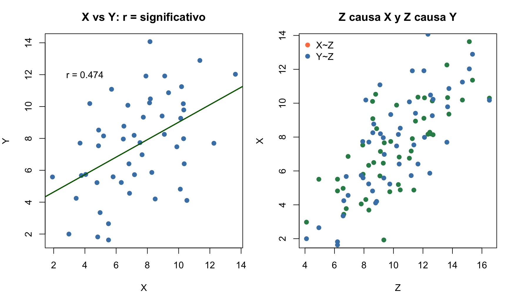
Lección: X e Y están correladas (\(r \approx 0.54\), \(P < 0.001\)), pero no hay relación causal entre ellas. Ambas dependen de Z. En investigación clínica, siempre considerar confusores.
Tip
Actividad en pareja (3 min): Buscad juntos un artículo científico en fisioterapia que use correlación o regresión. Identificad: (a) ¿qué variables se correlacionan? (b) ¿afirman causalidad los autores o solo asociación? (c) ¿se menciona algún posible confusor? Compartid un ejemplo con la clase.
Supuestos del modelo de regresión lineal
Linealidad:\(E(y \mid x) = \beta_0 + \beta_1 x\) — la relación es lineal
Independencia: Los errores \(\varepsilon_i\) son independientes entre sí
Homocedasticidad:\(Var(\varepsilon_i) = \sigma^2\) constante para todo \(x\)
Normalidad:\(\varepsilon_i \sim N(0, \sigma^2)\) — los errores siguen distribución normal
Tip
Estos supuestos se validan mediante gráficos de residuos. El modelo es razonablemente robusto a desviaciones moderadas, excepto en muestras pequeñas.
1. IC para la MEDIA de \(Y\) dado \(X=x_0\) (banda de confianza): \[\hat{y}_0 \pm t_{\alpha/2, n-2} \cdot s \cdot \sqrt{\frac{1}{n} + \frac{(x_0-\bar{x})^2}{S_{xx}}}\]
2. IP para un NUEVO INDIVIDUO (banda de predicción): \[\hat{y}_0 \pm t_{\alpha/2, n-2} \cdot s \cdot \sqrt{1 + \frac{1}{n} + \frac{(x_0-\bar{x})^2}{S_{xx}}}\]
Diferencia clave: el IP añade un +1 dentro de la raíz → incluye la variabilidad residual \(\sigma^2\).
Mostrar código R
nuevo <-data.frame(imc =c(22, 25, 28))# IC para la mediapredict(modelo, newdata = nuevo, interval ="confidence")
Regla para estudiantes: - ¿Quieres estimar la media de un grupo? → IC (intervalo de confianza) - ¿Quieres predecir el valor de un paciente? → IP (intervalo de predicción) - El IP siempre es más ancho que el IC. Si usas el IC para decidir sobre un individuo, estás siendo demasiado optimista. - Para que una predicción sea aceptable debemos considerar la variabilidad individual (IP), no solo la media (IC), el valor que usamos para predecir tiene que estar en el rango de valores observados para esa variable en el modelo y el coeficiente de determinación tiene que ser aceptable (\(\geq\) 0.7).
Ejemplo clínico: Para IMC=22, el % graso medio es 20.0% (IC 95%: 17.1% a 22.9%). Pero un paciente concreto con IMC=22 podría tener entre 10.0% y 30.0% de grasa (IP 95%).
Tip
Pregunta para reflexionar: Eres el fisioterapeuta de un paciente con IMC=28. ¿Usarías el IC de la media o el IP individual para comunicarle su % graso estimado? ¿Qué riesgos tiene usar el intervalo equivocado en la práctica clínica?
Advertencia
⚠️ Precaución — Extrapolación: El modelo solo es fiable dentro del rango de \(X\) observado. Si tu muestra tiene IMC entre 19 y 28, no uses el modelo para predecir el % graso de un paciente con IMC=45. La relación podría cambiar fuera del rango observado. En fisioterapia, esto es especialmente relevante con variables como fuerza, ROM o EVA, donde los extremos pueden comportarse de forma impredecible.
\(R^2\) es la proporción de variabilidad de \(Y\) explicada por \(X\).
\(R^2\)
Interpretación en contexto clínico
0.00–0.30
Débil — \(X\) explica poco de \(Y\). Buscar otras variables
0.30–0.50
Moderada — útil como parte de un modelo más amplio
0.50–0.80
Buena — \(X\) es un predictor relevante
0.80–1.00
Muy buena — pero verificar sobreajuste
Advertencia
Cuidado: Un \(R^2\) alto no implica causalidad. Puede deberse a una tercera variable oculta (confusor). Ejemplo: el nº de sesiones de fisioterapia puede tener alto \(R^2\) con la mejoría, pero si solo los pacientes más motivados asisten a más sesiones, la motivación es el verdadero factor causal.
Ejemplo a mano — Regresión lineal simple
Contexto clínico: ¿El nº de sesiones de fisioterapia predice la mejoría en EVA?
Checklist del estudiante: (1) Residuos vs Ajustados sin patrón → linealidad OK. (2) Puntos en diagonal → normalidad OK. (3) Dispersión constante → homocedasticidad OK. (4) Barras bajas → sin outliers influyentes.
Diagnóstico visual completo de residuos
Mostrar código R
par(mfrow=c(2,3), mar=c(4,4,3,1))residuos <-residuals(modelo)ajustados <-fitted(modelo)# 1. Residuos vs Ajustados (homocedasticidad)plot(ajustados, residuos, pch=19, col="steelblue",main="Residuos vs Ajustados", xlab="Ajustados", ylab="Residuos")abline(h=0, col="darkgreen", lty=2, lwd=2)# 2. Q-Q Normal (normalidad)qqnorm(residuos, pch=19, col="steelblue", main="Q-Q Normal")qqline(residuos, col="darkgreen", lwd=2)# 3. Scale-Location (homocedasticidad)plot(ajustados, sqrt(abs(rstandard(modelo))), pch=19, col="steelblue",main="Scale-Location", xlab="Ajustados", ylab=expression(sqrt("|Residuos estand.|")))# 4. Residuos vs Leverage (influencia)plot(hatvalues(modelo), rstandard(modelo), pch=19, col="steelblue",main="Residuos vs Leverage", xlab="Leverage", ylab="Residuos estand.")# 5. Cook's distanceplot(cooks.distance(modelo), type="h", lwd=3, col="seagreen",main="Distancia de Cook", xlab="Observación", ylab="Cook's D")abline(h=4/length(imc), col="darkgreen", lty=2)# 6. Histograma de residuoshist(residuos, col="steelblue", border="white", breaks=8,main="Histograma de Residuos", xlab="Residuos", freq=FALSE)curve(dnorm(x,0,sd(residuos)), add=TRUE, col="darkgreen", lwd=2)
Mostrar código R
par(mfrow=c(1,1))
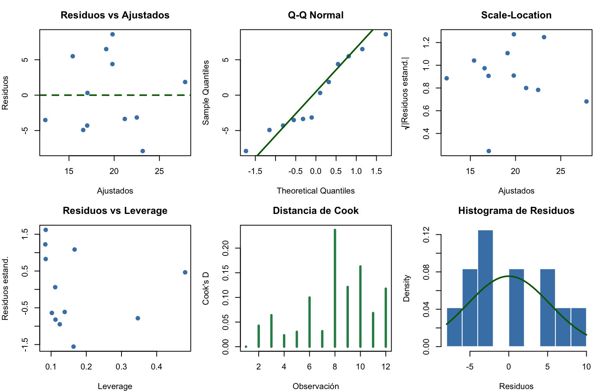
Qué buscar en cada gráfico: 1. Residuos vs Ajustados: Nube sin patrón → linealidad + homocedasticidad ✓ 2. Q-Q Normal: Puntos cerca de la diagonal → normalidad ✓ 3. Scale-Location: Línea horizontal → homocedasticidad ✓ 4. Leverage: Puntos alejados en \(x\) y \(y\) → outliers + influyentes 5. Cook’s D: Barras altas → observaciones que cambian sustancialmente el modelo
Cuarteto de anscombe — Por qué los gráficos importan (Anscombe, 1973)
Los cuatro conjuntos de datos de Anscombe tienen estadísticas idénticas (\(\bar{x}\), \(\bar{y}\), \(s_x\), \(s_y\), \(r\), recta de regresión) pero patrones completamente diferentes.
Lección: SIEMPRE visualizar los datos antes de calcular estadísticos. Los números por sí solos pueden engañar.
Tip
Pregunta para reflexionar: ¿Qué te dice el Cuarteto de Anscombe sobre los peligros de analizar datos clínicos sin visualizarlos primero? ¿Has visto algún caso en tu formación donde un resumen numérico ocultara un patrón importante?
Diagnóstico avanzado — Distancia de Cook y Leverage
Para el estudiante: La observación 11 (x=20) tiene alto leverage (lejos de \(\bar{x}\)) Y alta distancia de Cook (su remoción cambiaría mucho la recta). Es un punto influyente.
Bandas de confianza y predicción
Mostrar código R
plot(imc, graso, pch=19, col="steelblue", cex=1.3,xlab="IMC (kg/m²)", ylab="% Masa Grasa",main="Regresión con Bandas de Confianza y Predicción")abline(modelo, col="darkgreen", lwd=2)new_x <-seq(min(imc), max(imc), length=100)# Banda de confianza (para la MEDIA)pred_conf <-predict(modelo, newdata=data.frame(imc=new_x),interval="confidence")lines(new_x, pred_conf[,2], col="blue", lty=2, lwd=2)lines(new_x, pred_conf[,3], col="blue", lty=2, lwd=2)# Banda de predicción (para una NUEVA observación)pred_pred <-predict(modelo, newdata=data.frame(imc=new_x),interval="prediction")lines(new_x, pred_pred[,2], col="mediumseagreen", lty=3, lwd=2)lines(new_x, pred_pred[,3], col="mediumseagreen", lty=3, lwd=2)legend("topleft",c("Recta de regresión","IC 95% (media)","IP 95% (individuo)"),col=c("darkgreen","blue","mediumseagreen"), lty=c(1,2,3), lwd=2, bty="n")
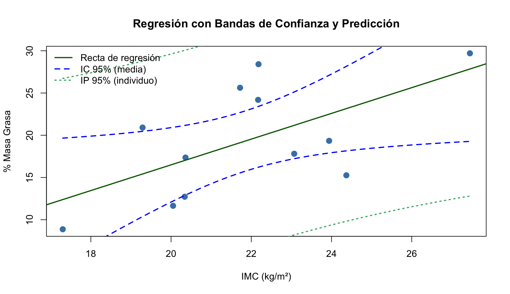
Importante
IC (banda azul): Incertidumbre sobre la media de \(Y\) dado \(X=x\). Más estrecha, converge a la recta con \(n\) grande.
IP (banda naranja): Incertidumbre sobre una nueva observación individual. Más ancha, incluye la variabilidad residual \(\sigma^2\) y no converge a cero al aumentar \(n\).
Matriz de correlaciones — Múltiples variables clínicas
Nota
Cuando tenemos más de dos variables, la matriz de correlaciones resume todas las asociaciones lineales por pares en una sola tabla. Es una herramienta exploratoria fundamental antes de construir modelos de regresión.
Ejemplo clínico — Datos de 12 adolescentes (15–19 años):
Correlación más fuerte: IMC ↔︎ Fuerza prensil (\(r = 0.884\))
Correlación más débil: Edad ↔︎ EVA (\(r = 0.618\))
Patrón esperado: variables antropométricas correlacionadas entre sí (IMC, % graso, fuerza, edad)
Hallazgo clínico: EVA correlaciona con % graso (\(r = 0.847\)) — posible mediación del dolor por composición corporal
Representación visual — mapa de calor (heatmap):
Mostrar código R
colores <-colorRampPalette(c("#2166ac", "white", "#b2182b"))(200)corrplot::corrplot(R, method ="color", type ="upper",col = colores, addCoef.col ="black",tl.col ="black", tl.cex =0.9,number.cex =0.8, diag =FALSE,title ="Matriz de Correlaciones — Datos Clínicos",mar =c(1, 0, 2, 0))
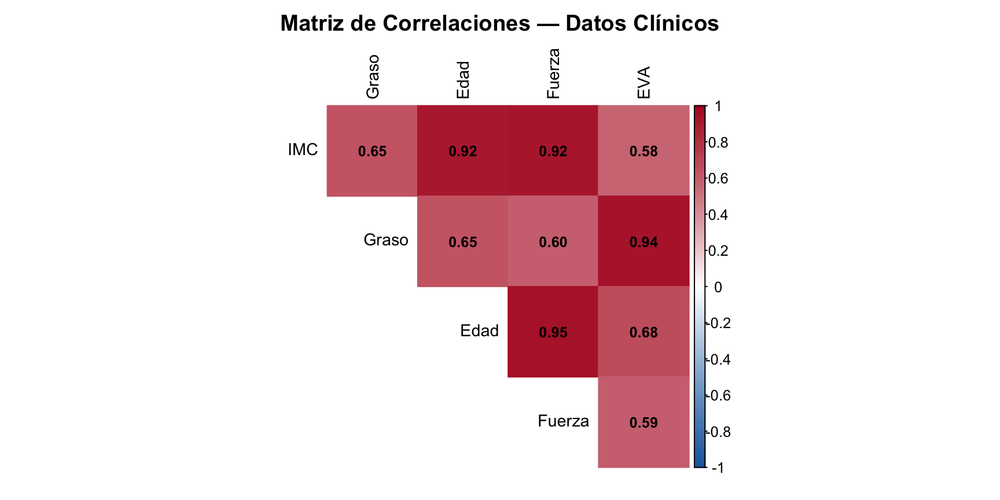
Importante
Cómo usar (y no usar) la matriz de correlaciones en fisioterapia: - ✅ Selección de variables para modelos de regresión (descartar colinealidad si \(|r| > 0.90\)) - ✅ Análisis exploratorio de patrones de asociación entre medidas clínicas - ✅ Validación de constructo: ¿correlacionan las variables que teóricamente deberían correlacionar? - ⚠️ Limitacion: Solo captura asociaciones lineales y marginales (por pares). No ajusta por confusores. Dos variables pueden mostrar correlación espuria que desaparece al ajustar por una tercera — fenómeno conocido como paradoja de Simpson. - cor() calcula la matriz; corrplot::corrplot() la visualiza; cortest() de BioEstatR evalúa la significación.
¿Por qué ajustar? El \(R^2\) ordinario siempre crece al añadir variables, incluso si son irrelevantes. El \(R^2_{\text{adj}}\) penaliza la complejidad innecesaria.
Regla: Si la diferencia entre \(R^2\) y \(R^2_{\text{adj}}\) es grande, el modelo puede estar sobreajustado (demasiadas variables para los datos disponibles).
Selección de modelos y sobreajuste
Nota
Principio de parsimonia (Navaja de Occam): entre modelos con similar ajuste, preferir el más simple.
Criterio de Información de Akaike (AIC):\[AIC = -2\log L(\hat{\theta}) + 2k\] donde \(k\) = número de parámetros. Penaliza la complejidad. Menor AIC = mejor modelo.
Sobreajuste (overfitting): modelo excelente en la muestra de entrenamiento pero pésimo prediciendo nuevos datos. \(R^2\) alto pero capacidad predictiva nula.
En Fisioterapia: al predecir recuperación funcional, incluir demasiadas variables (edad, sexo, IMC, comorbilidades, motivación…) puede llevar a sobreajuste si \(n\) es pequeño. Usar \(R^2_{adj}\) y AIC para guiar la selección.
Referencia: Akaike, H. (1974). A new look at the statistical model identification. IEEE Trans. Autom. Control, 19(6), 716-723.*
R base vs BioEstatR — Comparativa para regresión
Datos: IMC y % graso (n=12)
R Base
Mostrar código R
modelo <-lm(graso ~ imc)summary(modelo) # Coeficientes, R², test F
Call:
lm(formula = graso ~ imc)
Residuals:
Min 1Q Median 3Q Max
-7.893 -3.710 -1.422 4.664 8.592
Coefficients:
Estimate Std. Error t value Pr(>|t|)
(Intercept) -13.9643 13.7508 -1.016 0.334
imc 1.5231 0.6249 2.437 0.035 *
---
Signif. codes: 0 '***' 0.001 '**' 0.01 '*' 0.05 '.' 0.1 ' ' 1
Residual standard error: 5.547 on 10 degrees of freedom
Multiple R-squared: 0.3726, Adjusted R-squared: 0.3099
F-statistic: 5.94 on 1 and 10 DF, p-value: 0.03502
if (!requireNamespace("BioEstatR", quietly =TRUE)) install.packages("BioEstatR")library(BioEstatR)# Todo en uno: coeficientes, IC, R², ANOVA,# gráficos de diagnóstico, prediccionesdf <-data.frame(imc, graso)rls(graso ~ imc, data = df)
Regresión lineal simple
----------------------------------------------------------------
# Información muestral ---
variable n media dt Min Max Rango
1 graso 12 19.320 6.678 8.87 29.70 20.83
2 imc 12 21.853 2.676 17.30 27.45 10.15
Cov(graso,imc) = 10.91
# Correlación de Pearson ---
r IC_inf IC_sup gl texp sig
0.61 0.056 0.877 10 2.437 = 0.035
# Modelo lineal ---
Modelo: graso ~ imc
R² = 0.372
S²residual = 30.773
:
Coef estim se ic_inf ic_sup texp sig
1 (Constante) -13.964 13.751 -44.603 16.674 1.016 0.334
2 imc 1.523 0.625 0.131 2.916 2.437 0.035
# Distribución residual ---
Error estándar residual: 5.547
res zres
min -7.893 -1.556
Q1 -3.710 -0.793
Q2 -1.422 -0.277
Q3 4.664 0.891
max 8.592 1.619
Test de normalidad residual (Shapiro-Wilk):
w =0.935, p= 0.438
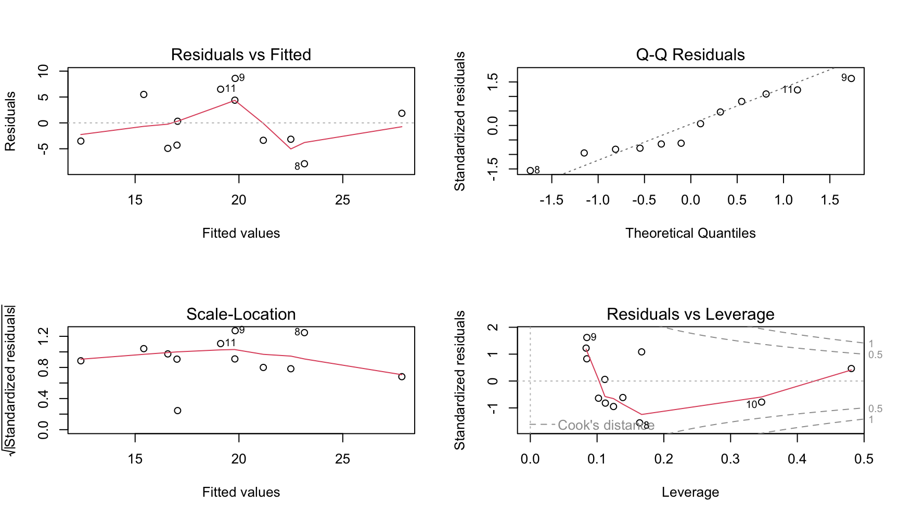
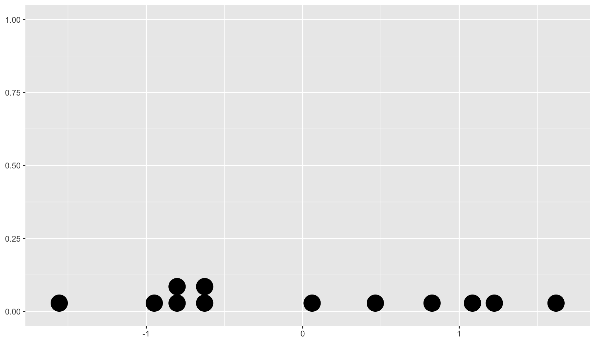
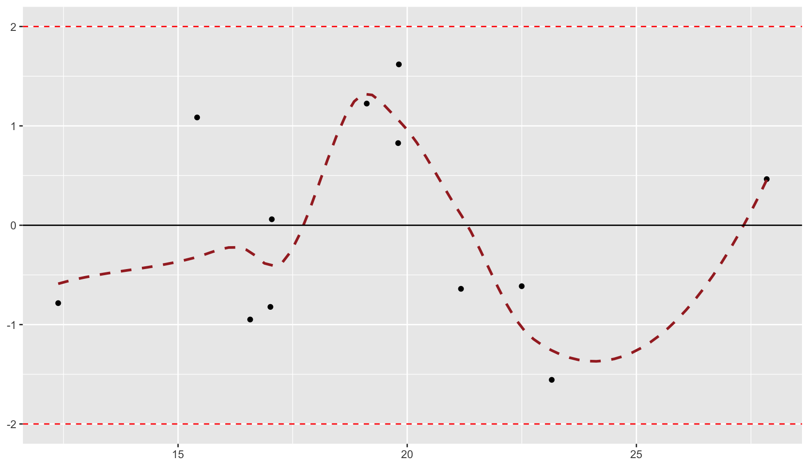
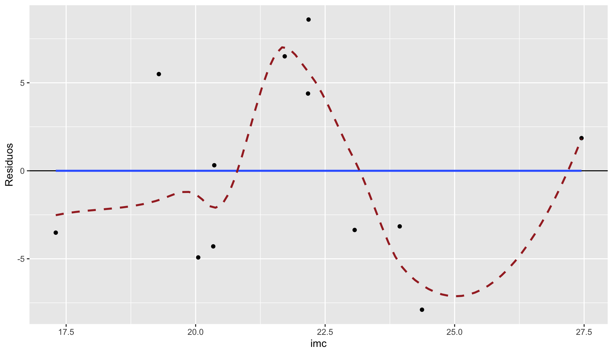
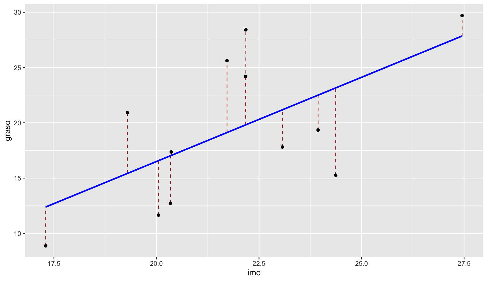
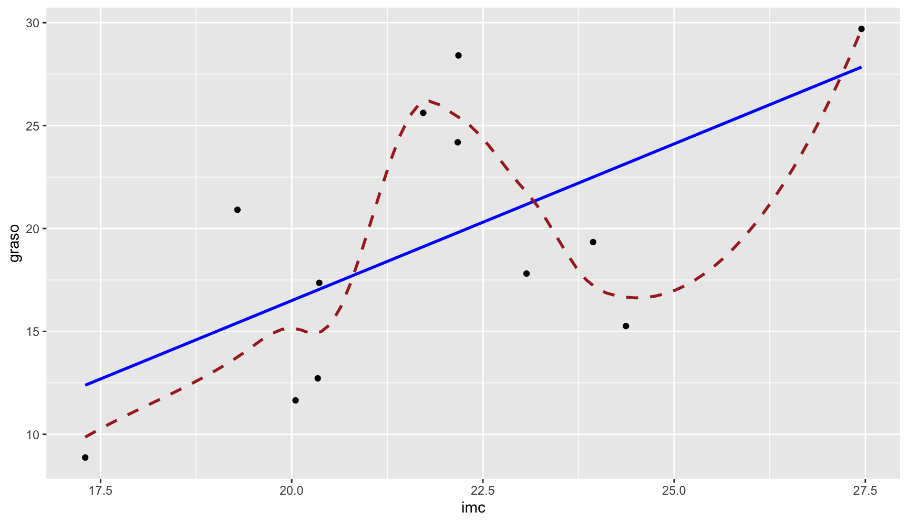
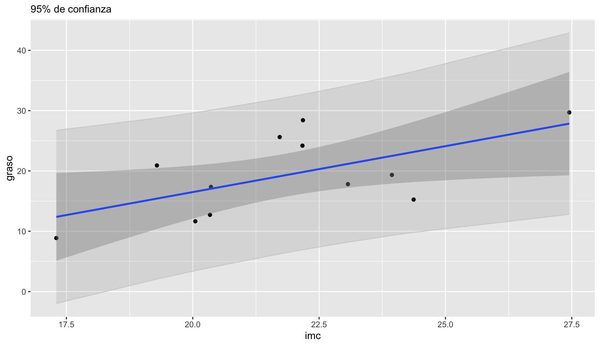
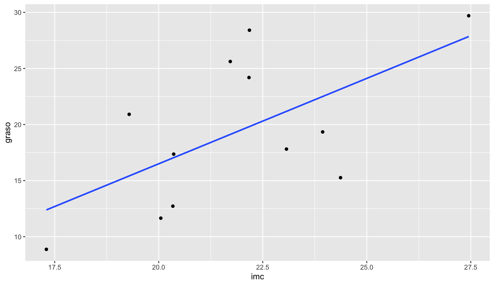
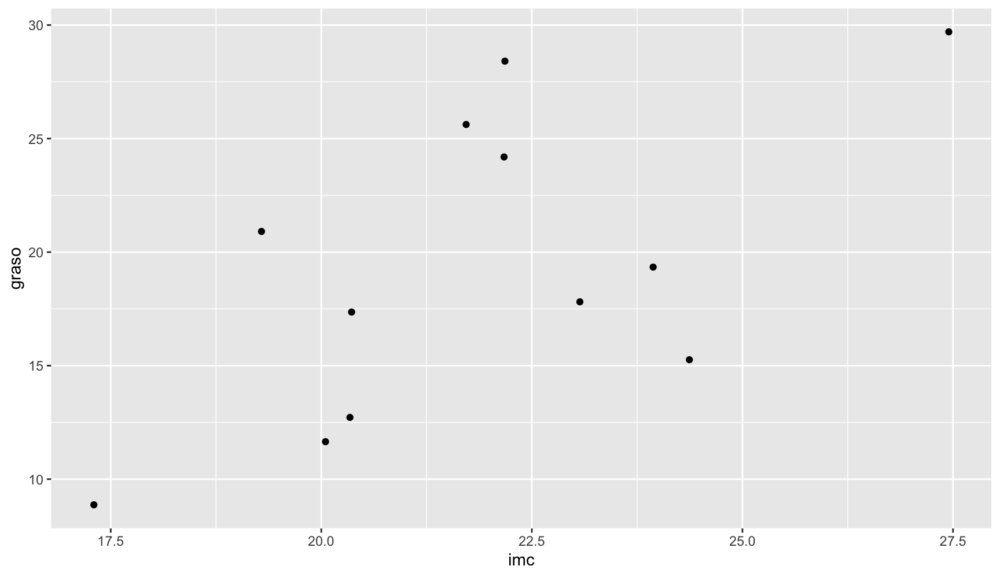
Tip
rls() equivale a:lm() + summary() + confint() + anova() + plot() — todo en una sola línea. Ideal para estudiantes porque muestra automáticamente los 4 gráficos de diagnóstico y la interpretación.
Resumen
Diagrama de dispersión: primer paso ineludible — detecta patrones, no linealidad, atípicos
Correlación (\(r\)): fuerza de la asociación lineal (−1 ≤ \(r\) ≤ 1); \(R^2\) = varianza explicada
Spearman: alternativa no paramétrica basada en rangos (relaciones monótonas)
Regresión lineal simple:\(y = \beta_0 + \beta_1 x + \varepsilon\) — estimación por MCO
\(\hat{\beta}_1\): cambio esperado en \(y\) por unidad de cambio en \(x\) (con IC y test)
Supuestos: linealidad, independencia, homocedasticidad, normalidad → gráficos de residuos
Predicción: IC (media) vs. IP (individuo) — el IP siempre es más ancho
Correlación \(\neq\) causalidad: solo el muestreo tipo II permite inferencia causal
Referencias complementarias del libro:
Luque-Fernández, M. A. (2026). Matemáticas para la Estadística Médica con R. Cap. 9-10: Regresión y Correlación (Semanas 9-10).
La regresión como marco unificador de todo el curso
Importante
Todo lo aprendido en los 6 temas converge en la regresión. Cada test puede verse como un caso particular de un modelo de regresión.
Test (temas anteriores)
Modelo de regresión equivalente
Test t una muestra (T4)
\(y_i = \beta_0 + \varepsilon_i\) (regresión sin predictores)
\(r = \beta_1 \cdot (s_x/s_y)\) (misma información que la pendiente)
Tip
El viaje del curso en una frase: - T1 describe → T2 modela → T3 estima → T4 contrasta → T5 asocia → T6 unifica y predice - La regresión es el destino final: permite estimar, contrastar, asociar y predecir simultáneamente - En investigación clínica en fisioterapia, el análisis casi siempre culmina en un modelo de regresión (lineal, logística o de supervivencia)
Ejercicio clínico — Regresión lineal en fisioterapia
Un fisioterapeuta investiga la relación entre el IMC (kg/m²) y el porcentaje de masa grasa en 30 pacientes sedentarios. Los datos están en grasa_imc.csv. El análisis con rls(grasa ~ imc) produce:
\(P < 0.001\) para \(\beta_1\), IC 95% para \(\beta_1\): (1.23, 2.07)
Interpreta \(\hat{\beta}_1\) en lenguaje clínico: ¿cuánto aumenta el % de grasa por cada unidad de IMC?
¿Qué significa \(R^2 = 0.72\) en este contexto?
Predice el % de grasa para un paciente con IMC = 28 usando la ecuación: \(\hat{y} = -12.4 + 1.65 \times 28\).
¿Puedes afirmar que el IMC causa un aumento del % de grasa? ¿Por qué?
Referencias
(Femia & Luque-Fernández, 2026) — Femia, P. & Luque-Fernández, M. A. (2026). BioEstatR: Biostatistics Routines in R. R package. Universidad de Granada.
(Luque-Fernández, 2026) — Luque-Fernández, M. A. (2026). Matemáticas para la Estadística Médica con R. Universidad de Granada.
(Pearson, 1895) — Pearson, K. (1895). Note on regression and inheritance in the case of two parents. Proc. R. Soc. Lond., 58, 240–242.
(Spearman, 1904) — Spearman, C. (1904). The proof and measurement of association between two things. Am. J. Psychol., 15(1), 72101.
(Anscombe, 1973) — Anscombe, F. J. (1973). Graphs in statistical analysis. Am. Stat., 27(1), 17–21.
(Gauss, 1809) — Gauss, C. F. (1809). Theoria motus corporum coelestium. (Mínimos cuadrados).
(Legendre, 1805) — Legendre, A. M. (1805). Nouvelles méthodes pour la détermination des orbites des comètes.
(Draper & Smith, 1998) — Draper, N. R. & Smith, H. (1998). Applied Regression Analysis (3rd ed.). Wiley.
(Harrell, 2015) — Harrell, F. E. (2015). Regression Modeling Strategies (2nd ed.). Springer.
Anscombe, F. J. (1973). Graphs in Statistical Analysis. The American Statistician, 27(1), 17-21.
Draper, N. R., & Smith, H. (1998). Applied Regression Analysis (3rd ed.). Wiley.
Gauss, C. F. (1809). Theoria Motus Corporum Coelestium. Friedrich Perthes und I.H. Besser.
Harrell, F. E. (2015). Regression Modeling Strategies: With Applications to Linear Models, Logistic and Ordinal Regression, and Survival Analysis (2nd ed.). Springer.
Legendre, A.-M. (1805). Nouvelles méthodes pour la détermination des orbites des comètes. Firmin Didot.